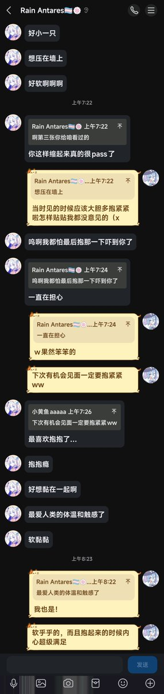

Rain Antares🏳️⚧️🍥
@Rain_Antar1121
@siuuuuneo 啊啊呜被抱起来展示了）好开心呜咪🥰
能这样治愈你咱好幸福吖～咱来这里想找的就是能无忧无虑黏在一起趴着的软猫猫૮₍♡>𖥦<₎ა…大抱抱哦～
欢迎来找咱玩咪！想再抱一次…要认真抱哦🥹

小黄鱼a
@siuuuuneo
呜呜呜谢谢@Rain_Antar1121 姐姐凌晨在我心情超差的时候陪我呢...给我发了日出的照片当时还说了一句“我在就是你在啦”真的好感动，姐姐拍的好好看好好看的
而且咱也好喜欢跟人抱抱贴贴哦，黏在一起软乎乎的触感心理也超级满足，后面做好准备长途旅行的时候有机会一定会来和姐姐贴贴抱紧紧的啦嘿嘿w https://t.co/K4ksXi3mUt